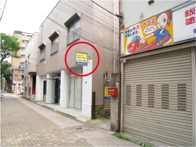
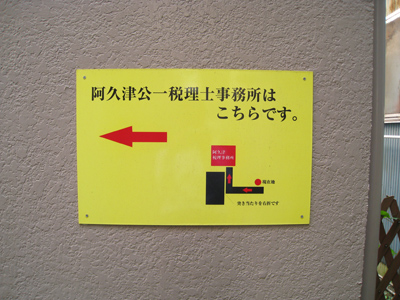
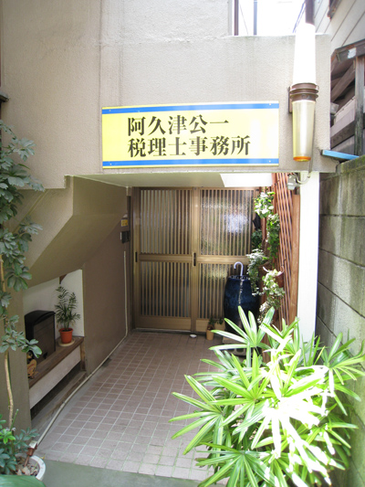

サービス案内
会計と税務のプロフェッショナルである当事務所では、各種税務・会計顧問のみならず、経営に関するアドバイスやサポートサービス（MAS）にも力を入れています。
決算顧問
面倒な決算処理を代行。決算書作成のための最小パックです。
- 記帳代行（記帳チェック）
- 決算業務
- 法人税・地方税・消費税申告書の作成
- 決算時の各種届出書の作成・税務会計相談
決算時のみのサービスとなります。必要に応じて別報酬業務をセレクト出来るので、顧問費用を無駄なく有効に活用することが可能です。
税務会計顧問
日々の税務・会計処理を代行。決算等の定期業務に加えて日常の相談・指導が盛り沢山です。
- 毎月の定期訪問・記帳代行（記帳チェック）
- 月次試算表の作成
- 決算業務・各種届出書の作成
- 法定調書・償却資産申告書の作成・年末調整
- 税務会計経営相談
MAS監査サービス
経営管理を導入し経営改善。「経営戦略の構築と経営管理の仕組作りのお手伝い」がMAS（Management Advisory Service）です。目指すは「中小企業の経営企画室」。
- 財務や会計のプロフェッショナルによる総合的な経営サポート
- 長期的な視野での経営管理の仕組みづくり
- 経営者自らが答えを導ける経営のサポート
新規開業顧問
新しく開業する皆様を全力で支援。開業から3年間限定のお得なサービスです。
- 必要に応じての随時面談指導・記帳代行・試算表の作成
- 創業・起業手続一切・創業時事業計画作成指導
- 創業時資金相談・経理システム構築指導
- ビジネスモデル研究会への参加
キャッシュフロー顧問
税務会計顧問に財務対策をプラス。経営者の意思決定に不可欠な財務シミュレーションをセットしたサービスです。
- 毎月の定期訪問・記帳代行・月次試算表の作成
- 決算業務・税務会計経営相談
- 財務シミュレーション
シミュレーションは損益（P/L）・貸借（B/S）・キャッシュフロー（C/F）が完全に連動した専用ソフトを使用します。
事務所概要
基本情報
- 事務所名
- 阿久津公一税理士事務所
- 所在地
- 〒135-0016 東京都江東区東陽1-23-9
- 電話番号
- 03-3649-5370
- FAX
- 03-3649-5371
- 代表者
- 阿久津 公一
- 従業員
- 5名
- 設立
- 平成13年5月
- 営業時間
- 平日 9:30〜18:00頃まで
事務所の歴史と顧客数・売上高の変遷を公開した「事務所の歩み」や、中期経営計画書（経営計画 PDF）も公開しています。
経営理念・行動指針
- 顧客育成 — 「正しい経営」の実践と普及に努め、長期的視点にたった経営サポートができる「顧問先育成型会計事務所」を目指します。
- 地域密着 — 「親身、親切、丁寧な対応」で地域社会から愛され頼りにされる「地域密着型会計事務所」を目指します。
- マーケティング志向 — 日々変化する社会のニーズに対応したサービスを提供し続ける「マーケティング志向型会計事務所」を目指します。
- 成長志向 — 変化を恐れず常に成長し進化し続ける「成長志向型会計事務所」を目指します。
- 利益配分 — 事業協力者と共に喜びを分かち合う「利益配分型会計事務所」を目指します。
※事業協力者とは所員、関与先、事務所、協力業者、金融機関、社会を指しています。
所員紹介
所長 阿久津公一（税理士）
昭和34年 東京都江東区生れ（亥年 山羊座 A型）
「親身、親切、丁寧な対応」をモットーに、地域（江東区）に密着し、地域社会に貢献する税理士事務所を目指しています。地域社会で必死で頑張っている皆様を、徹底的に応援します。
所員 奥島 剛
千葉県出身、乙女座のA型
【趣味】サッカー観戦（Juventusファン）、動物と戯れる（毛虫以外）
【事務所のお気に入り】中庭
「石橋を叩き過ぎて壊す」ぐらい用心深い性格ではありますが、「石橋を適宜叩いて渡る」事で皆様のお役に立ちたい所存です。よろしくお願いいたします。
よくある質問 Q&A
料金に関する質問
Q. 税務会計顧問契約後の経営相談は追加料金がかかりますか？
A. 税務会計顧問契約をされているお客様であれば、追加料金なしでご相談頂けます。ただし定期的に経営改革のための会議を行なう必要がある場合等は、別途MASの契約をご検討ください。
Q. うちは取引件数が少ないので記帳はラクだと思うのですが、安くなりませんか？
A. 取引件数が少ない場合、仕訳数が少なくなりますので、料金がお得になる場合がございます。また、件数が少ないのであれば自計化を行なうことで、最も安い料金体系を適用することができます。是非ご相談ください。
サービス内容・対応範囲に関する質問
Q. 毎月訪問はしてくれますか？
A. ご要望があれば毎月訪問可能です。
Q. 基本的に全て任せてしまいたいのですが、丸投げできますか？
A. はい、領収書等を全てお送り頂くことで、経理・税務を当事務所に丸投げ頂くことが可能です。
Q. 記帳は自社でできるので、決算だけお願いできますか？
A. はい、決算顧問のみのサービスもご用意しております。
場所・対応エリアについての質問
Q. 対応地域はどこのエリアですか？
A. 東京都全域、埼玉県、千葉県、神奈川県あたりまで対応しています。
Q. 初回の相談時に、何か用意しておくべきものはありますか？
A. 特に無くても構いませんが、二期以降であれば過去の決算書類などをお持ちいただくとスムーズです（必須ではありません）。設立第一期決算前の場合は領収書・請求書等が一式あるとイメージがつきやすくなります。
Q. まだ法人登記前なのですが、相談できますか？
A. もちろんです。創業をふまえたアドバイスや、人脈の紹介もできるかもしれません。
セミナー・インフォメーション
事務所セミナー開催情報
- 『経営者のマナビバ』江東例会
- ランチの会『我が社の採用戦略』『キャッシュフロー経営に強い社長養成講座』
- Dr.SANTA物流改革セミナー
- 『税制改正セミナー』
- 『一日公庫』 in 阿久津公一税理士事務所
- MASお試し講座（1日で中期5ヵ年計画を立案するセミナー）
インフォメーション
- 所得拡大促進税制 中小企業の留意点
- 助成金メールマガジン
- 『創業補助金』特設サイト
- ピックアップ「元気な顧問先！」
税の情報・助成金情報なども随時発信しています。
アクセスマップ
- 所在地
- 〒135-0016 東京都江東区東陽1-23-9
- 電話番号
- 03-3649-5370（平日9:30〜18:00頃まで）
- 最寄り駅
- 東西線 木場駅 徒歩7分 / 東西線 東陽町駅 徒歩8分
写真付き道案内


